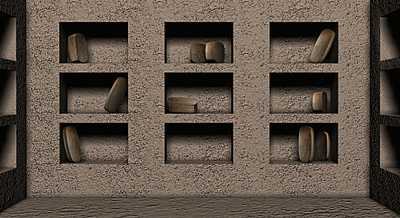

Daily TextThe front of this tablet is a record of a lunar eclipse and the appearance of several important stars. It describes how on the 13th night, of month 9, of the 97th year the bright star of the constellation 'Old Man' had reached its highest point. There was also an eclipse of the moon.
|